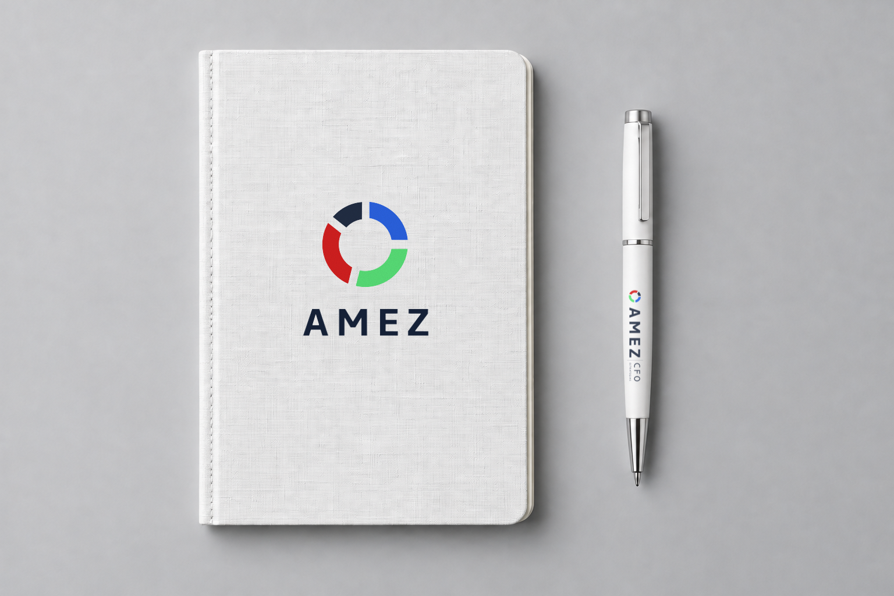

Hacer comprensible
el análisis financiero
Identidad, lenguaje y recursos para dar continuidad al análisis
Dirección · Comunicación financiera · Sistema de marca

La identidad acompaña la conversación. Los recursos compartidos ayudan a continuarla.
Explorar la aportación ↓Del análisis a la conversación
El análisis necesita una audiencia que comprenda sus implicaciones y un equipo que pueda continuarlo. El reto era trasladar la metodología de la firma a materiales claros para presentar servicios, incorporar clientes y revisar resultados.
Mi aportación
Dirigí un sistema de marca y comunicación que conecta identidad, lenguaje, visualización de datos y aplicaciones de trabajo. Incluye presentaciones comerciales y de revisión financiera, documentos reutilizables, contenido educativo y propuestas para medios digitales.
Diseño al servicio de la lectura financiera
Ordenar
Dar estructura a la oferta y a las conversaciones financieras.
Explicar
Relacionar información, supuestos e implicaciones.
Dar continuidad
Compartir recursos y criterios de uso con el equipo.
Recursos para dar continuidad
La identidad se vuelve útil cuando acompaña las conversaciones y los documentos del equipo.


Un repertorio con criterios compartidos de uso, desde la presentación hasta la documentación.
Ver las aplicaciones en contexto · PDF ↗Una metodología que puede continuar
Construimos un repertorio de recursos y plantillas con criterios compartidos de uso. Mi aportación fue vincular el diseño con la lectura financiera: ordenar la información, hacer visibles los supuestos y facilitar que el análisis conduzca a una conversación sobre decisiones.
- Comunicación de resultados
- Diseño de información financiera
- Metodología reutilizable
Se muestran piezas de comunicación de la firma. No se incluyen expedientes ni resultados de clientes.
Volver a proyectos ←